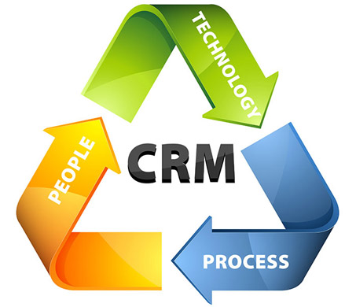

Content Management System or CMS can be of several different types. The CMS when used in the context of websites, means a way to create as well as update web pages of the site. It allows the users or admin of the sites to update text or picture or media content of the site without having to design the whole page and its content all over. CRM on the other hand stands for Customer Relationship Management and is a system of recording and managing the interactions of any business with its customers.
Depending on the company type and its business as well as the software selected, a CRM may be very complex or simple. A proper data feedback from a properly designed and developed CRM can go a long way in improving customer centric business decisions that will help the business grow.
Using Content Management System and CRM has become an integral part of any modern day business. We are one of the few reliable companies that have in-house content management system development services as well as CRM development services. Using our customised solutions, you not only get to edit and delete your web content, you can also create them at will.
Using our Content Management System and CRM you can manage your professional looking website, edit its contents, and also opt for multi-user site management options. You can also do a lot more with your content and also create forms as well as manage the submitted data. We use our Content management system development services and our CRM development services to integrate both CMS and CRM for best utility of your website.
We also include a number of other apps and social networking apps for capturing client interaction data and other client details. Using our CMS, you can add a number of varied modules to your site for better customer interaction and understanding customer trends; all the CRM data can be accessed from your handheld mobile devices too. We definitely are among the best Content Management System and CRM services company, with a team of highly talented and able developers.
Drupal
Drupal is written in PHP and distributed under GNU General Public License. It is a free and open source content management framework. Used for business collaboration as well as knowledge management, Drupal is one of the most used back-end systems. It is used by more than 2% of the web sites worldwide, which includes personal blogs and government websites as well as some official government sites from the United States and United Kingdom.
Drupal core is the standard release of Drupal and contains basic features for content management system. With Drupal CMS user account registration and maintenance, system administration, customising page layout and RSS feed can be easy. Single or multi-user blogs or simple websites, internet forum or community forum with user-generated content, can be easy with Drupal Core.
Our very experienced Drupal development services team offers loads of solutions for your website and more. We aim to help both the experienced and the new entrepreneurs in developing applications in Drupal as well as build or develop websites. We offer our services to both individuals as well as organisations also. We not only assist Drupal installation and configuration but also design and develop the websites.
Our Drupal Development services team, undertake CCKs and views of the pages as well as take care of the taxonomy structures. They also review and design modules as well as redo them if necessary. Our development team also creates standard and custom made themes for the sites and also fine tunes them for performance. We configure Drupal cache and optimise SQL Query, and also tune MySQL as well as Apache.
Our Drupal development services team also has some of the most gifted programmers who can develop tailor-made software solutions for any business domain. They design and develop these solutions only after deeply understanding your business objectives, and realising your vision. They design the most effective and efficient solutions for your project management practises and more. These developments include end-to-end services covering every aspect of development. We also offer maintenance and technical support for all our products at the most affordable prices.
Joomla
Written in PHP, Joomla is a free and open source CMS or Content Management System. It is widely used for publishing content on the World Wide Web as well as intranets. Joomla also uses OOP or Object Oriented Programming techniques and stores data in MYSQL or MSSQL and other databases as per the version. It also uses software design patterns and includes a number of exciting features like RSS feeds, page caching, polls, blogs, printable versions and so on.
It is possibly the second most popular Content Management System on the internet. It not only has numerous designs and extensions, it is also extremely user-friendly and also mobile ready. With the handheld devices gaining popularity as the preferred mode of internet access, Joomla and other content management systems are gaining preference from developers and coders in leaps and bounds.
We have the most talented and creative developers and designers in our Joomla Development Services. They are some of the most specialized web developers and designers using Joomla. They design custom websites for both corporate and private clients. Be it portal development, custom Joomla plugin, extension or component development, or web application development, we do it all with the best results.
Our amazing design and user interface, as well as our in-depth understanding of the online trends, help you gain a significant edge over your competitors. We design every kind of custom-designed website using Joomla or any other platform you may prefer. Our talented developers and designers also integrate Joomla website and its content management system with CRM for better customer understanding.
Moreover, we are also experts in integrating CMS, CRM and your social networking pages for a complete circle of customer interaction and understanding. We also have a number of other services like template and theme development and customisation, as well as plugin development for your requirements. We also offer extended support and maintenance services for all our products and we offer the most reasonable charges for our top-notch services.
WordPress
Wordpress is an open source blogging tool and it is also free. Based on PHP, this content management system or CMS is also based on MySQL and runs on web hosting services. This is one of the most popular blogging systems across the world, powering more than sixty million websites worldwide. Wordpress has revolutionised the process of content management system for blogs and other websites developed on its framework.
Blog publishing has been easy with the development of Wordpress and WordPress Development Services have been customising templates and developing some amazing websites and modules for Wordpress blogs, websites as well as e-commerce sites. One of the biggest advantages of this content management system is its flexibility as well as powerful structure and architecture. It also makes your website search engine friendly with its SEO features, and is also compatible with the latest standards like XHTML.
Your specific requirements for website development and customisation are handled by a very talented and expert team of Wordpress development service team. They also are experts in search engine optimisation and other practises. They have excellent depth, capabilities with amazing skills in handling Wordpress CSS styling and MVC architecture, as well as Wordpress framework. They are among the most gifted PHP and MySQL, XML, JQuery programmers.
They are also experts in other Open Source CMS technologies. The flexibility and other stunning features of the content management system is completely exploited by our team of developers and designers at the WordPress Development Services. We are one of the best teams to deliver the most dependable, safe and robust CMS or Content management System solutions on Wordpress. Be it a single user system or a multi-user system, we customise them all, and also integrate them seamlessly with existing system.
From blogging to e-commerce, we customise Wordpress CMS for all purposes. We also customise themes and tailor make plugins for your requirements. We offer our expertise and top notch services at a nominal cost and also offer technical support and service for all our products. If you have a website in mind, we have all the measures and means to develop and design it for you.
SugarCRM
SugarCRM is based in Cupertino in California, and is a software development company. The flagship product of this company is known as SugarCRM or Sugar, which, as the name indicated, is a CRM or a Customer Relationship Management system. SugarCRM is available in commercial open source applications as well as open source. Customer relationship management software is one of the most widely used software these days by organisations of almost every size and dimension.
It is because of the flexibility of SugarCRM as well as its ability to cover a variety of business needs, this customer relationship management software is gaining huge popularity among developers across the globe. SugarCRM is also Open source and hence a cost effective and a better option than most CRMs. Integrated with CMS or Content Management Service, SugarCRM can work wonders in providing insight to the business, customer dynamics and helping it grow comprehensively.
We have some of the most talented people in our SugarCRM development services and they can customise most of the major and crucial business processes. They improve and customise functionality including sales force automation and also customer support and collaboration. They can also be customised for mobile CRM and Social CRM as well as reporting. Customisation and developing market activity management, settings and administration, customer service and sales management, call management, payment module management, as well as sales and leads managing and campaign and client account management are some of the areas customised and developed by our expert SugarCRM development services.
Our experts not only customise the CRM as per the business need, they also design and develop different modules based on this open source CRM to maximise your customer relationship management. They also integrate the CRM with Content Management Systems and also embed them in your social networking pages. This helps in having a complete overview of customer behaviour and trends as well as manage customer relationships better. A deep insight to the sales figures and trends also helps in making proper sales strategy and other marketing efforts. Overall, SugarCRM integrated with CMS can work wonders for any business.
Copyright © 2016 Mgainz Communication Pvt Ltd. - All Rights Reserved.
 +91 124 670 7927
+91 124 670 7927 support@mgainz.com
support@mgainz.com